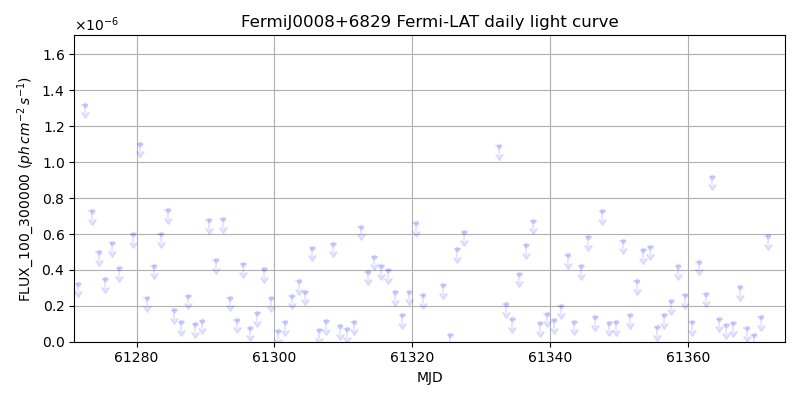
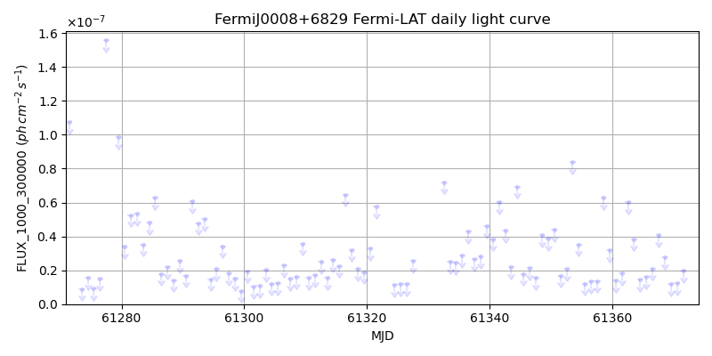

LAT Lightcurve site: https://fermi.gsfc.nasa.gov/ssc/data/access/lat/msl_lc/source/Fermi_J0008p6829
NED: Query
Time of last update of this page: UT: 2026-11-20 16:10 (MJD: 61364.674)
| Property | Value |
|---|---|
| R.A. | 0:08:20.64 |
| Dec. | 68:34:44.4 |
| z | 0.000 |
| 3FGL SpectrumType | |
| 3FGL PL Index | -1.00 |
| 3FGL Flux_100_300000 | -1.00e+00 |
| 3FGL Flux_1000_300000 | -1.00e+00 |
| 3FGL Flux >200 GeV | -1.00e+00 |
| 3FGL Extrap. Crab >200 GeV | -1.00 |
| 3FGL Flux After EBL Absorption >200GeV | -1.00e+00 |
| 3FGL EBL Crab Fraction >200GeV | -1.00 |

| MJD | dMJD | Flux | dFlux | Frac3FGL | FracCrab>200GeV | EBLFracCrab>200GeV |
|---|---|---|---|---|---|---|
| 61359.50 | 0.50 | 2.60e-07 | 0.00e+00 | 0.00 | 0.00 | -0.00 |
| 61360.50 | 0.50 | 1.08e-07 | 0.00e+00 | 0.00 | 0.00 | -0.00 |
| 61361.50 | 0.50 | 4.46e-07 | 0.00e+00 | 0.00 | 0.00 | -0.00 |
| 61362.50 | 0.50 | 2.68e-07 | 0.00e+00 | 0.00 | 0.00 | -0.00 |
| 61363.50 | 0.50 | 9.19e-07 | 0.00e+00 | 0.00 | 0.00 | -0.00 |
| MJD | dMJD | Flux | dFlux | Frac3FGL | FracCrab>200GeV | EBLFracCrab>200GeV |
|---|---|---|---|---|---|---|
| 61328.50 | 3.50 | 5.09e-07 | 0.00e+00 | 0.00 | 0.00 | -0.00 |
| 61335.50 | 3.50 | 2.55e-07 | 0.00e+00 | 0.00 | 0.00 | -0.00 |
| 61342.50 | 3.50 | 1.41e-07 | 0.00e+00 | 0.00 | 0.00 | -0.00 |
| 61349.50 | 3.50 | 8.55e-08 | 0.00e+00 | 0.00 | 0.00 | -0.00 |
| 61356.50 | 3.50 | 1.39e-07 | 0.00e+00 | 0.00 | 0.00 | -0.00 |

| MJD | dMJD | Flux | dFlux | Frac3FGL | FracCrab>200GeV | EBLFracCrab>200GeV |
|---|---|---|---|---|---|---|
| 61359.50 | 0.50 | 3.20e-08 | 0.00e+00 | 0.00 | 0.00 | -0.00 |
| 61360.50 | 0.50 | 1.39e-08 | 0.00e+00 | 0.00 | 0.00 | -0.00 |
| 61361.50 | 0.50 | 1.81e-08 | 0.00e+00 | 0.00 | 0.00 | -0.00 |
| 61362.50 | 0.50 | 6.01e-08 | 0.00e+00 | 0.00 | 0.00 | -0.00 |
| 61363.50 | 0.50 | 3.85e-08 | 0.00e+00 | 0.00 | 0.00 | -0.00 |

| MJD | dMJD | Flux | dFlux | Frac3FGL | FracCrab>200GeV | EBLFracCrab>200GeV |
|---|---|---|---|---|---|---|
| 61328.50 | 3.50 | 1.31e-08 | 0.00e+00 | 0.00 | 0.00 | -0.00 |
| 61335.50 | 3.50 | 8.67e-09 | 0.00e+00 | 0.00 | 0.00 | -0.00 |
| 61342.50 | 3.50 | 1.61e-08 | 0.00e+00 | 0.00 | 0.00 | -0.00 |
| 61349.50 | 3.50 | 6.21e-09 | 0.00e+00 | 0.00 | 0.00 | -0.00 |
| 61356.50 | 3.50 | 1.52e-08 | 0.00e+00 | 0.00 | 0.00 | -0.00 |
--------------------------------------------------------- Using user-supplied coords: 0:08:20.64 68:34:44.4 2000 --------------------------------------------------------- FLWO UT night of: 2026-11-21 Local Sid. @ Midnight: 03:37 Sunset (-15.0) (local, UT): 18:33 01:33 Sunrise (-15.0) (local, UT): 05:47 12:47 Moonrise (local, UT): Moonset (local, UT): 03:40 10:40 Moon phase: 0.85 --------------------------------------------------------- AzTime LSID UT Obj_el Obj_az Mn_el Mn_az Sep. --------------------------------------------------------- 18:33 22:09 01:33 49.1 16.2 47.9 117.4 61.6 19:03 22:39 02:03 50.7 12.8 53.3 125.0 61.5 19:33 23:09 02:33 51.9 8.8 58.2 134.7 61.4 20:03 23:39 03:03 52.7 4.6 62.3 146.9 61.2 20:33 00:09 03:33 53.0 0.1 65.1 162.1 61.1 21:03 00:39 04:03 52.7 355.6 66.3 179.7 61.0 21:33 01:09 04:33 52.0 351.3 65.4 197.5 60.9 22:03 01:39 05:03 50.8 347.3 62.9 213.2 60.8 22:33 02:09 05:33 49.2 343.9 59.0 225.9 60.7 23:03 02:39 06:03 47.3 341.0 54.2 235.9 60.5 23:33 03:09 06:33 45.0 338.7 48.9 243.9 60.4 00:03 03:39 07:03 42.6 337.0 43.2 250.4 60.3 00:33 04:10 07:33 40.1 335.8 37.3 255.9 60.2 01:03 04:40 08:03 37.4 335.0 31.2 260.7 60.1 01:33 05:10 08:33 34.7 334.8 25.1 265.1 60.0 02:03 05:40 09:03 32.0 334.9 19.0 269.2 59.9 02:33 06:10 09:33 29.3 335.4 12.9 273.0 59.8 03:03 06:40 10:03 26.7 336.3 6.8 276.9 59.7 03:33 07:10 10:33 24.1 337.5 1.0 280.7 59.6 04:03 07:40 11:03 21.8 338.9 -4.9 284.7 59.6 04:33 08:10 11:33 19.6 340.6 -11.1 288.8 59.5 05:03 08:40 12:03 17.5 342.5 -16.8 293.2 59.4 05:33 09:10 12:33 15.7 344.6 -22.3 298.1 59.3 05:47 09:25 12:47 14.9 345.7 -24.8 300.5 59.3 --------------------------------------------------------- Source never above horizon of 55.0 deg. Dark hours >55 deg.: 0.00